Posted In:
- Бош Дизель центр Дако Краснодар
- Настроить
- Калькулятор стоимости
- 4Доступно 4 обновления
- 00 комментариев ждут одобрения
- Добавить
- Редактировать страницу
- Редактировать в Elementor
- Rank Math SEO
- Autoptimize
-
Информация о кэше CSS/JS
0%Размер: 0.00 B Файлы: 0 -
Очистить кэш CSS/JS
-
-
Объектный кеш
-
Template: single.php
-
Template relative path: themes/fixlab/single.php
-
Theme name: FixLab (NOT a child theme)
-
Also, below template files are included:
- themes/studiopress.php
- themes/fixlab/dynamic-styles.php
- themes/fixlab/footer.php
- themes/fixlab/functions.php
- themes/fixlab/header.php
- themes/fixlab/inc/class-custom-sidebars.php
- themes/fixlab/inc/customize/functions-customize-blog.php
- themes/fixlab/inc/customize/functions-customize-elements.php
- themes/fixlab/inc/customize/functions-customize-footer.php
- themes/fixlab/inc/customize/functions-customize-global.php
- themes/fixlab/inc/customize/functions-customize-header.php
- themes/fixlab/inc/customize/functions-customize-helpers.php
- themes/fixlab/inc/customize/functions-customize-projects.php
- themes/fixlab/inc/customize/functions-customize-shop.php
- themes/fixlab/inc/customize/functions-customize.php
- themes/fixlab/inc/functions-blog.php
- themes/fixlab/inc/functions-filters.php
- themes/fixlab/inc/functions-helpers-styles.php
- themes/fixlab/inc/functions-helpers.php
- themes/fixlab/inc/functions-metaboxes.php
- themes/fixlab/inc/functions-projects.php
- themes/fixlab/inc/functions-setup.php
- themes/fixlab/inc/functions-template.php
- themes/fixlab/inc/functions-woocommerce.php
- themes/fixlab/inc/options/class-options-container.php
- themes/fixlab/inc/options/class-options-control.php
- themes/fixlab/inc/options/class-options-section.php
- themes/fixlab/inc/options/fields/background.php
- themes/fixlab/inc/options/fields/border.php
- themes/fixlab/inc/options/fields/checkboxes.php
- themes/fixlab/inc/options/fields/code.php
- themes/fixlab/inc/options/fields/color.php
- themes/fixlab/inc/options/fields/colors.php
- themes/fixlab/inc/options/fields/column-layout.php
- themes/fixlab/inc/options/fields/dimension.php
- themes/fixlab/inc/options/fields/dropdown-pages.php
- themes/fixlab/inc/options/fields/dropdown.php
- themes/fixlab/inc/options/fields/editor.php
- themes/fixlab/inc/options/fields/heading.php
- themes/fixlab/inc/options/fields/icons.php
- themes/fixlab/inc/options/fields/image-picker.php
- themes/fixlab/inc/options/fields/markup.php
- themes/fixlab/inc/options/fields/media-picker.php
- themes/fixlab/inc/options/fields/radio-buttons.php
- themes/fixlab/inc/options/fields/radio-onoff.php
- themes/fixlab/inc/options/fields/social-icons.php
- themes/fixlab/inc/options/fields/textareafield.php
- themes/fixlab/inc/options/fields/textfield.php
- themes/fixlab/inc/options/fields/typography.php
- themes/fixlab/sidebar.php
- themes/fixlab/tmpl/footer-content.php
- themes/fixlab/tmpl/footer-copyright.php
- themes/fixlab/tmpl/footer-widgets.php
- themes/fixlab/tmpl/header-sliding-toggle.php
- themes/fixlab/tmpl/header-sticky.php
- themes/fixlab/tmpl/header-title.php
- themes/fixlab/tmpl/header-topbar.php
- themes/fixlab/tmpl/header.php
- themes/fixlab/tmpl/off-canvas.php
- themes/fixlab/tmpl/post/content-related.php
- themes/fixlab/tmpl/post/content-single.php
-
- WP Rocket
 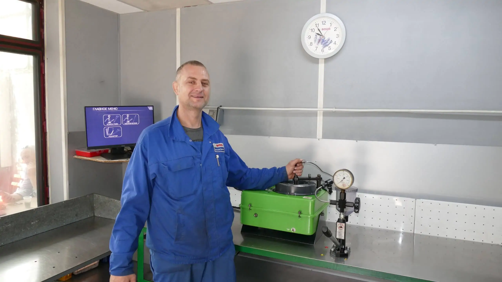
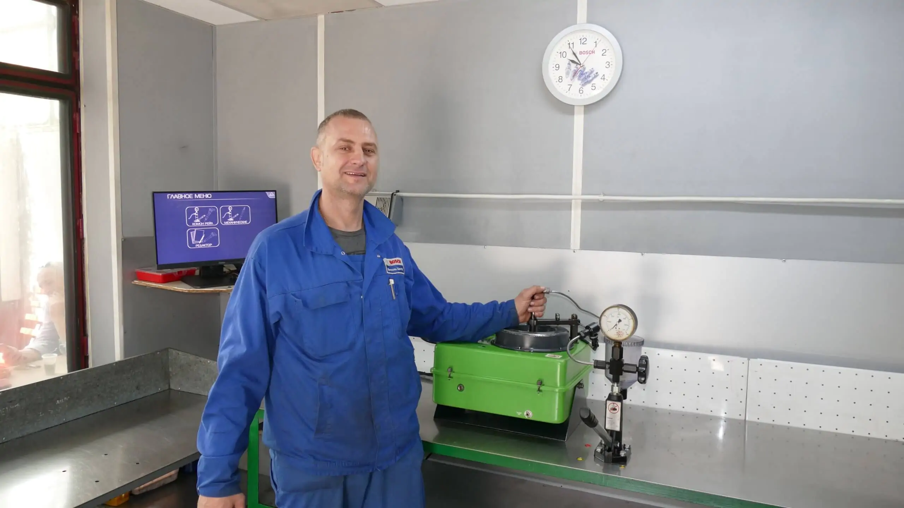
 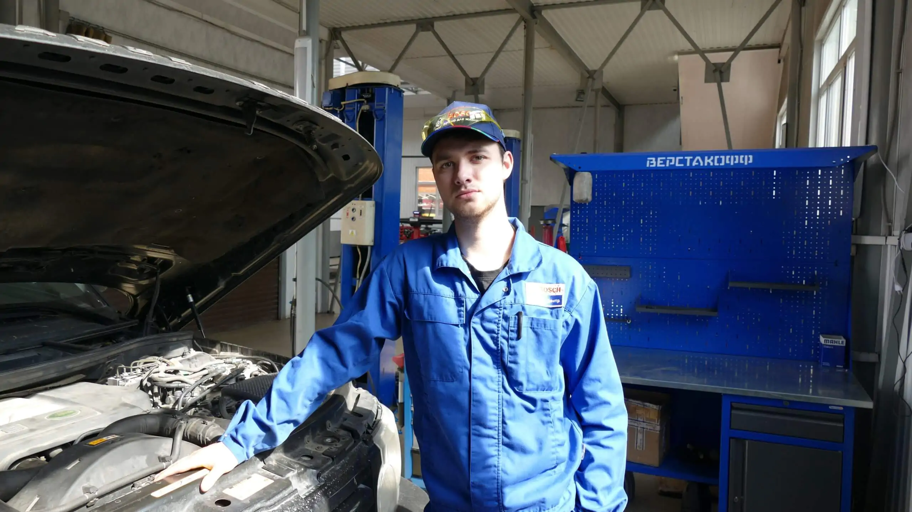
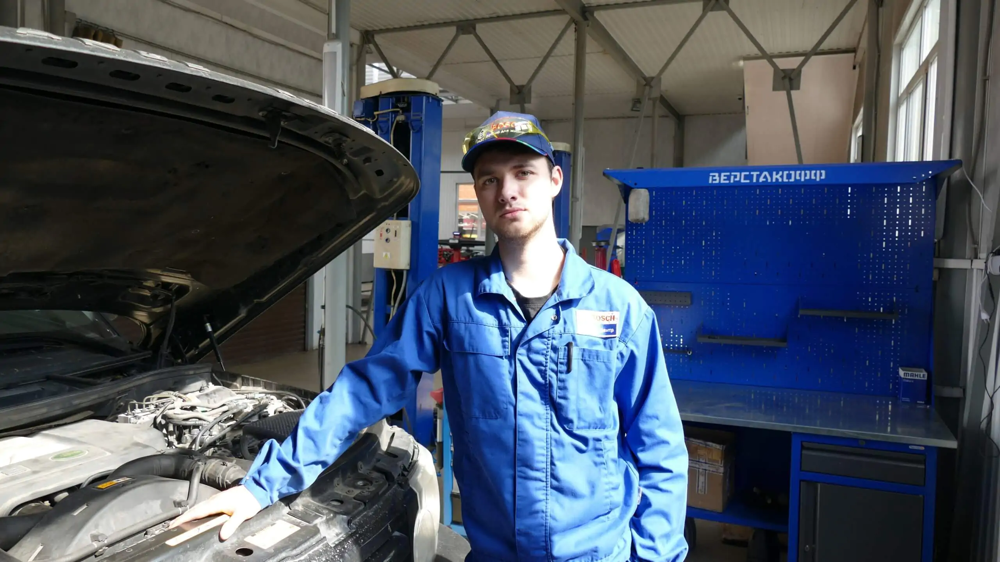
 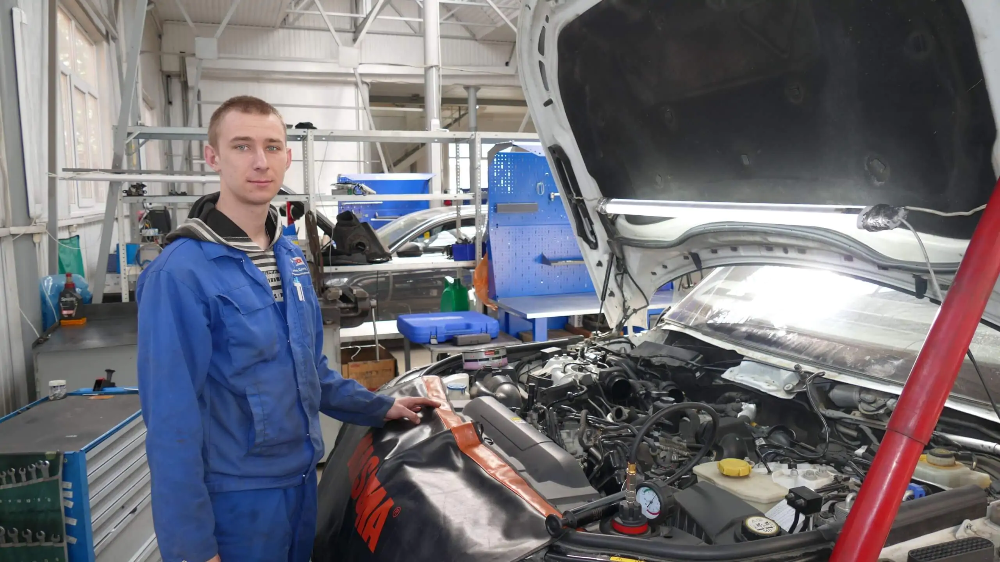
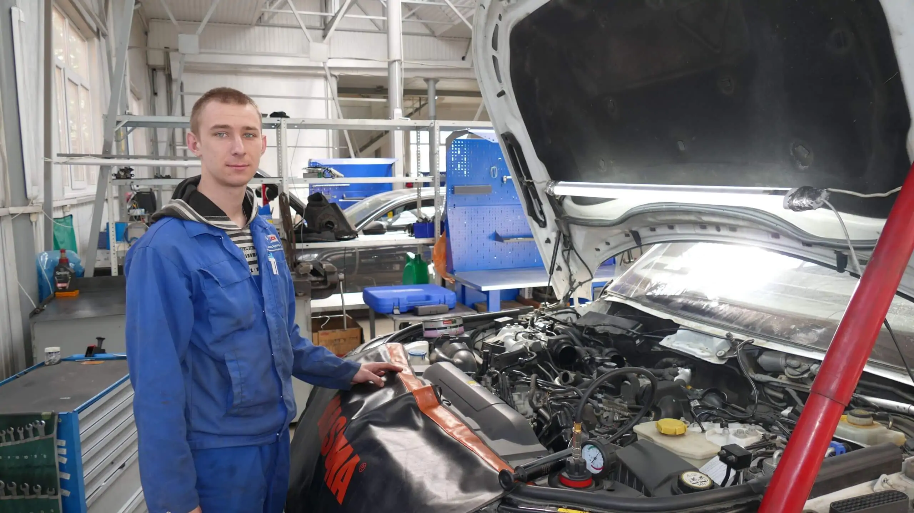
 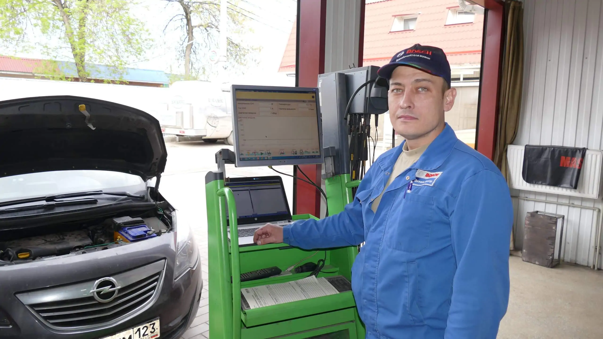
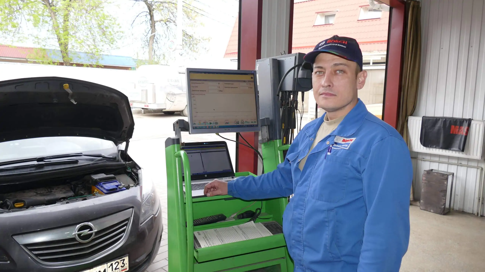
 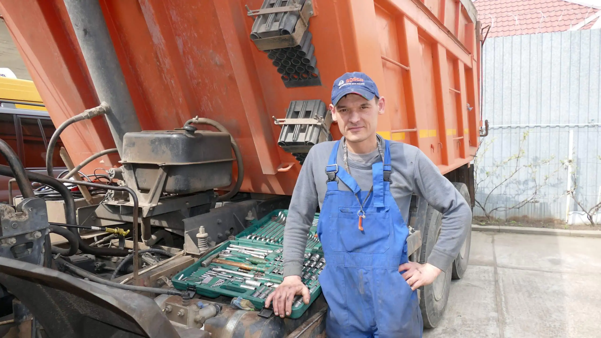
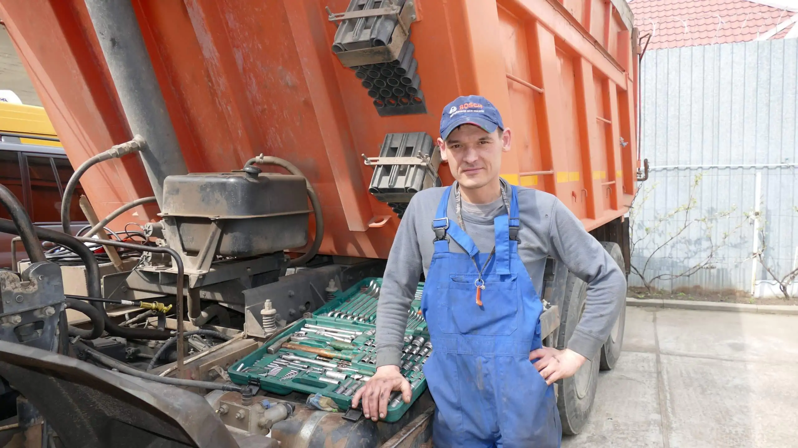
 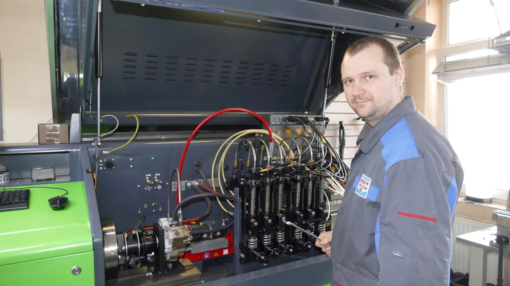
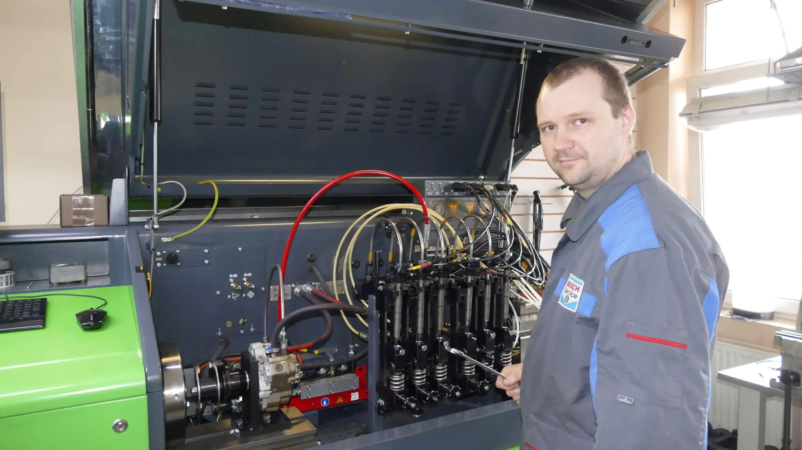
 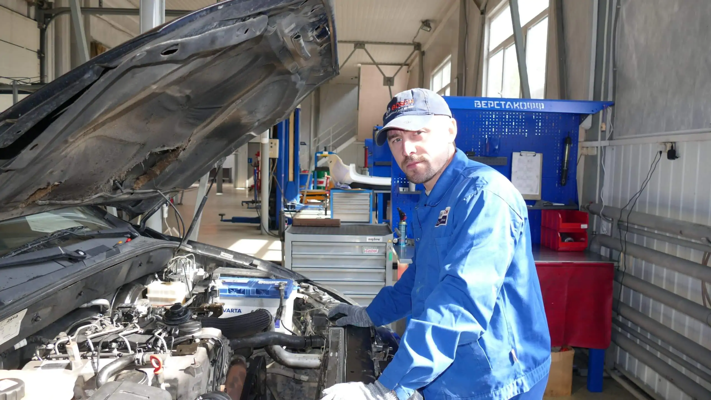
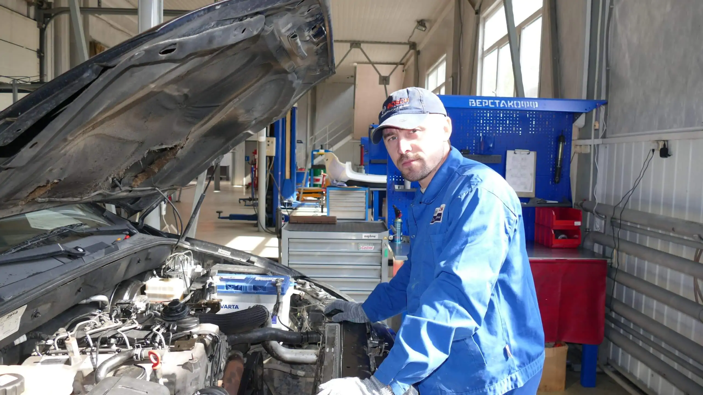
 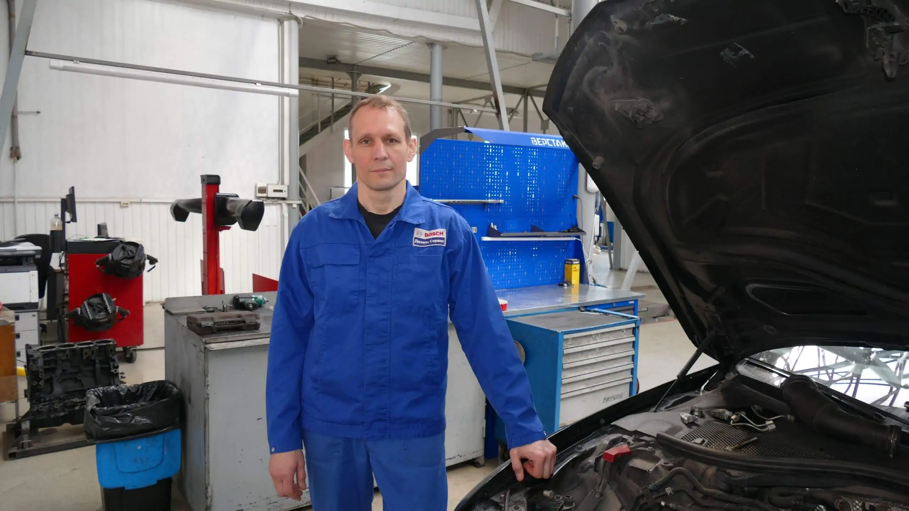
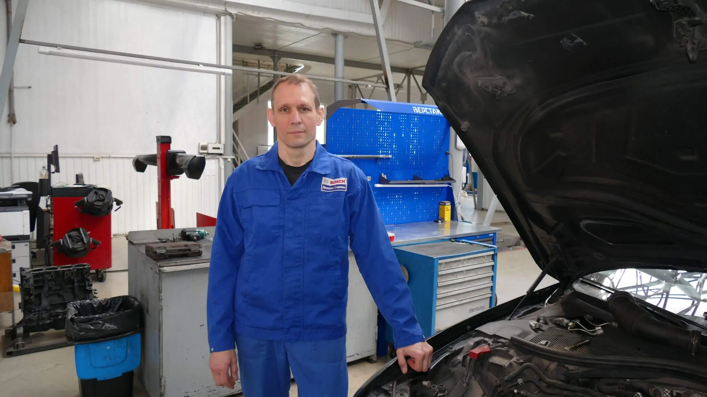